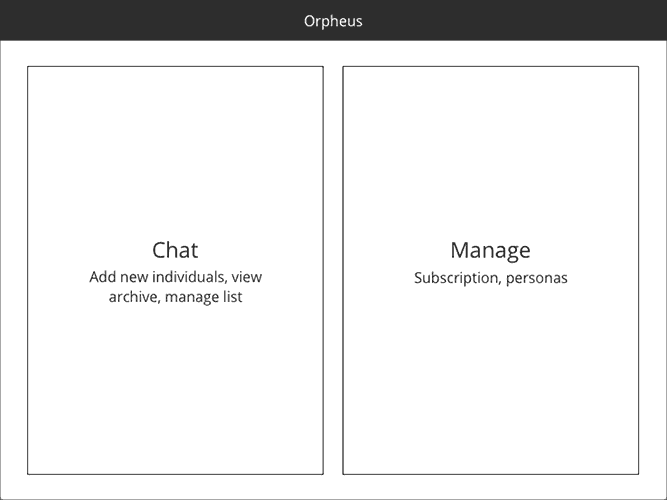
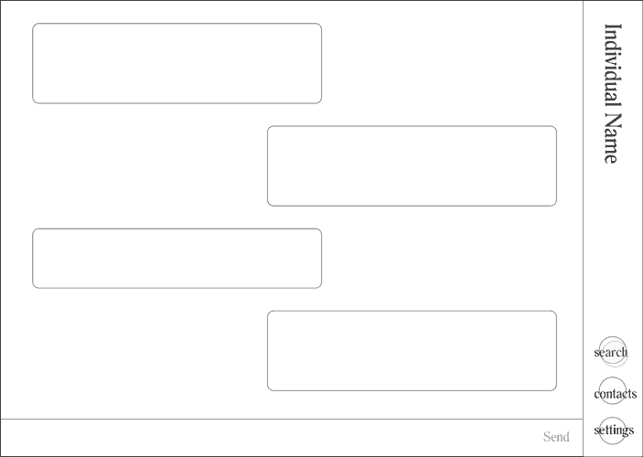
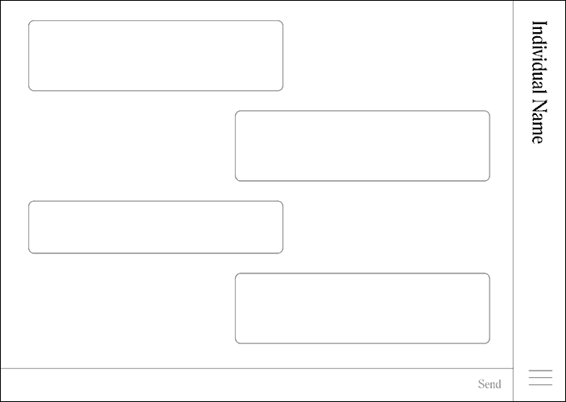
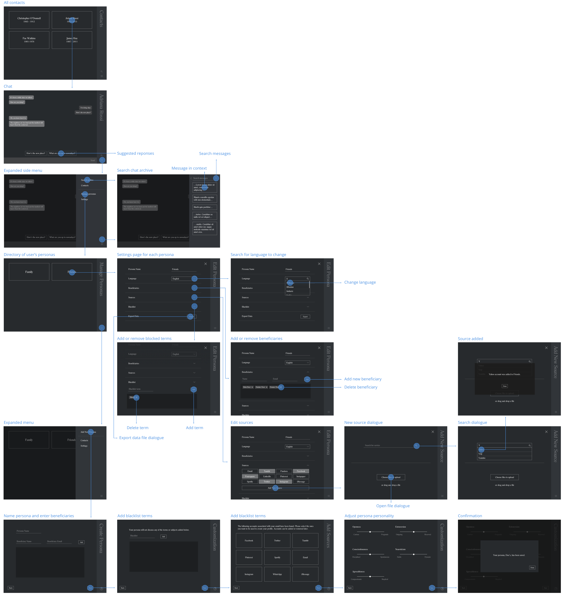

The intersection of death, artificial intelligence, and identity
Orpheus is a speculative postmortem bot company. I designed a customer onboarding and chat interfaceto investigate the implications and potential issues that may arise from the popularization of AI, especially as a form of memorial.
Exploring Ambiguity
Orpheus began as a response to designers and their role in creating futures that may not necessarily exist. Design is and should not be limited to problem solving but also embrace "problem finding" and "problem worrying." How can designers identify emergent trends, extrapolate them, consider possible consequences, and contemplate the designer's role in said future?

The Futures Cone is a popular visualization of futuring. As one gets further away from "today," the number of possibilities increase. Designers often operate within probable and closer to the narrow of the cone, when sometimes it may be necessary to consider timelines farther out and further away from probable. By designing for these murkier areas, designers can shift what is considered "probable."
Identifying Microfutures
I started with looking at current events, trends, and behaviors. I was intrigued by a work by artist Jill Magid. She created a diamond with Mexican architect Luis Barragán's ashes to exchange for access to his archive, privately owned by a Swiss couple. What intrigued me was the transformation of an individual's physical form and, despite being deceased, how one can still create value; Barragán's body was to be traded for his body of work. Moving forward, I wanted to explore how might we maximize our potential and continue creating value even after death.
Sideshows
By considering potential parallel developments, side effects, and countermovements, I begin to question and understand how a designed artifact can change the context it was originally designed for.


A futures wheel focused on the side effects of an obsession with efficiency and value even after death, considering how value can be created through physical body, labor, and intellectual/created property. After choosing to concentrate on chat bots built from our accumulated data and digital trails, McLuhan’s Laws of Media further fleshed out how new technologies can potentially impact individuals as well as cultural practices.
I also considered existing commercial ventures; how might today’s companies leverage their resources into the postmortem AI space?

Building Orpheus
I envisioned postmortem bots as becoming just another step in planning for the future, not unlike a will or life insurance. These bots serve a variety of purposes: helping others with the grieving process, acting as archivists and historians for future generations, extending an individual's legacy.
I decided to design the onboarding process to explore the potential awkwardness of creating a bot counterpart. As participants create a bot, I wanted them to consider a variety of questions related to identity, privacy, and ownership.
1. Controlling the identity of an individual
Should individuals be creating a realistic bot or a idealized version of themselves? Would beneficiaries want to remember individuals in a realistic manner or the best light possible? Who gets to make the decision?
2. Ownership and monetization
Who owns the bot? The company (Orpheus) or the individual? If bots are free, how do companies monetize collected data? If paid, is it a one time fee or subscription? If it's subscription based, does the bot simply stop existing once payment stops?
3. Privacy
How willing are people to surrender all their data to another service? Would people DIY bots to maintain more control?
Iterations
Early iterations focusing on the onboarding interactions became more focused on the visuals, as onboarding consisted of a few sequential forms. As a result, I became more focused on visual explorations.


To better focus on creating a more robust system, I started over with a general user flow and began prototyping the entire experience.

Rough prototypes allowed for exploring how users would actually go through the app. The first prototype only allowed for users to modify one variable at a time, with the intention of not overwhelming the user, but this limitation resulted in an painstakingly slow process.
Menus and button styles were inspired by the name and wayfinding plaques inside Taiwanese columbariums. I considered other menu placements as well, as a right justified menu is a bit unusual, but ultimately went with that placement because it blended in the background more easily. A hamburger menu allowed for consistent interactions.
I eliminated imagery and chose a more sterile and cold visual style to establish a sense of distance. Interacting with bots can play a role in the mourning process but should delay or interrupt the process.
Final Design
In addition to the onboarding, I also prototyped the chat interface. When conversation lulls or becomes awkward, suggestions appear to prompt the user to continue conversing.
While one is alive and still generating data, Orpheus will continually update to create a realistic bot, though one can also make small personality adjustments. In addition to popular web services, individuals can upload other personal files. Individuals can also control the language their bot speaks, those who can access the bot, and what the bot can or cannot discuss. Providing editing capabilities gives owners a greater sense of control and trust in the bot. Data can be exported, hinting at the possibility of individuals breaking away from the "corporate" system and DIYing bots.
Reflection
While postmortem bots are very possible, it's harder to say if they would actually become popular. It's difficult to say if people are willing to suspend disbelief long enough to engage in meaningful conversation or if people will become too invested in a bot.
I primarily thought about bots acting as a replacement for an individual after they passed away and not as something that should be active while it’s "owner" is still alive, but it would be interesting to consider how one's bot counterpart could take on its own life as an assistant, handling difficult messages or situations one might want to avoid. Who influences who’s development? Could bots reliably make decisions for us?